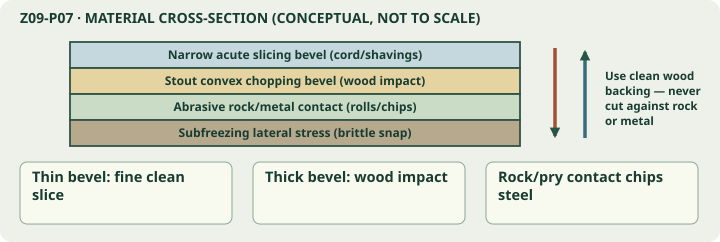

Z09-P07 · Tools and construction · New manuscript
Understand steel edge geometry, toughness and brittleness
Recognize how thin slicing grinds versus thicker chopping bevels behave so you do not chip or snap blades in cold or hard materials.
When it applies · Using and maintaining knives, chisels, wedges and axe heads across field conditions.
Equipment · Hand tool with known blade profile and appropriate cutting surface (clean wood, not stone or metal).

Actions
- Recognize the basic trade-off: thin narrow bevels slice cordage and shavings cleanly with little effort, whereas thicker convex or stout bevels resist chipping on harder wood impacts.[K04, K01, ED]
- Avoid cutting directly against rock, sand, metal cans or bone with fine wood-carving blades—hard abrasive contact rolls or chips thin steel edges immediately.[K01, K04, ED]
- Recognize that very hard steel and subfreezing temperatures increase brittleness under lateral prying or heavy impact shocks.[K02, K04, ED]
Failure recognition · Using a thin kitchen or fillet blade to split frozen hardwood, snapping the blade cleanly in half toward the user's hand.[K01, K02, K04]
Verify · Match blade thickness and grind to the target material and confirm a clean wood backing surface underneath cuts.[K01, K04, ED]
Stop or change course · Stop cutting if an edge chips, cracks or bends noticeably; retire damaged steel rather than forcing a compromised blade deeper into tough material.[K02, K04]
Evidence and editorial notes
- K01 · OSHA · Hand and Power Tools Safety and Health Topics (current web edition)
- Section: Hand Tools > General Safety Rules · Conditions: Use of knives, saws, axes, hammers and hand tools
Support: Keep hand tools in good condition, use the right tool for the job, examine each tool for damage before use, operate according to instructions and wear appropriate personal protective equipment.
Limitations: General occupational rules do not replace task-specific forestry or field-tool training. · Conflicting evidence: None; baseline tool safety framework.
Editorial note: Anchors tool selection, pre-use inspection and operating boundary cards in Z09. · Specialist reviewer: Tool safety and occupational safety
Primary source · checked 2026-11-24 - K02 · OSHA · Hand and Power Tools (OSHA 3080) (agency PDF)
- Section: Hand Tools > Knives, Chisels, Impact and Wrenches · Conditions: Manual cutting, striking and prying operations
Support: Direct cutting blades away from the body and bystanders, never use cracked wooden handles or mushroomed striking heads, and do not substitute wrenches or blades as pry bars.
Limitations: Does not specify material tensile ratings for improvised handles. · Conflicting evidence: None; directly informs safe cutting and impact-tool failure cards.
Editorial note: Prevents blade slip, splintered-handle and spalling-metal injuries. · Specialist reviewer: Tool safety and wilderness medicine
Primary source · checked 2026-11-24 - K04 · USDA Forest Service · Handtools for Trail Work (0523-2810-MTDC) (agency handbook)
- Section: Sharpening, Filing and Handle Maintenance · Conditions: Maintaining cutting edges and wood tool handles in field or shop
Support: Secure the tool firmly before filing or honing, keep fingers behind file guards, preserve factory bevel geometry without overheating steel and replace loose or cracked handles rather than taping them.
Limitations: Field touch-up honing does not correct chipped, cracked or heat-annealed steel blades. · Conflicting evidence: None; separates routine edge maintenance from unsafe handle patching.
Editorial note: Guides sharpening, rust prevention and handle-failure retirement cards. · Specialist reviewer: Tool maintenance and forestry safety
Primary source · checked 2026-11-24
Source lineage · USFS handtool maintenance and OSHA 3080; new manuscript · Classification · New manuscript.